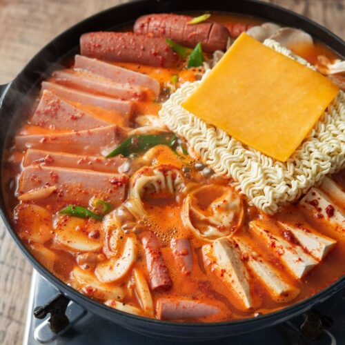

Korean Army Stew: A dish shaped by wartime austerity
Korean Army Stew, also known as Budae Jjigae, is a Korean stew that combines jjigae-style broth with filling pantry ingredients. It is bold, spicy, and commonly served as a shared one-pot meal.
The dish developed during and after the Korean War, when food scarcity pushed people to adapt available ingredients into local cooking. Locals would incorporate surplus ingredients from the U.S. Military, which included a lot of canned meats such as spam, hotdogs, and sausage, with traditional korean ingredients like kimchi and gochujang.

Recipe ingredients
| Ingredient | Amount | Purpose |
|---|---|---|
| Kimchi | 1 cup | Adds sourness, spice, and depth to the broth. |
| Spam or sausage | 1 cup | Adds saltiness, protein, and reflects postwar history. |
| Tofu | 1/2 block | Adds texture and softens the stronger flavors. |
| Ramen noodles | 1 pack | Makes the stew more filling. |
| Gochujang | 1 to 2 tablespoons | Adds heat, color, and Korean flavor. |
| Broth (beef) | 4 cups | Creates the base that brings the stew together. |
Basic Cooking Steps
- Place the kimchi, spam or sausage, tofu and chosen vegetables in a wide pot.
- Mix the broth with gochujang and pour it over the ingredients.
- Bring the stew to a boil, then reduce the heat and simmer until the ingredients are heated through.
- Add the ramen noodles near the end so they cook without becoming too soft.
- Serve the stew hot from the pot with white rice or banchan on the side.